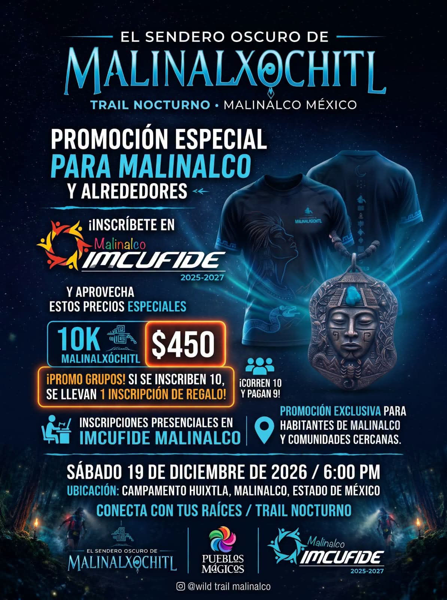

Cuando el sol cae sobre las montañas de Malinalco, la tierra no duerme: despierta. Y este sábado 19 de diciembre de 2026, esos mismos senderos que durante siglos han guardado leyendas se convierten en la pista de una de las carreras más distintas del Estado de México: El Sendero Oscuro de Malinalxóchitl, un trail running nocturno de 10 kilómetros que se corre con lámpara frontal, bajo la luna, en roca viva y entre la memoria de la hechicera que le dio nombre a este Pueblo Mágico.
Si eres corredor —o si estás pensando en vivir tu primera aventura de trail nocturno— aquí tienes toda la información oficial verificada: ficha técnica, equipo obligatorio, precios, registro y, sobre todo, cómo organizarte para disfrutarlo sin tener que manejar de madrugada de regreso a casa.
Qué es El Sendero Oscuro de Malinalxóchitl
Es la 1ª edición de un trail nocturno organizado por el Ayuntamiento de Malinalco a través del IMCUFIDE, de la mano de Wild Trail Malinalco (WTM) y JP Trailrunning. No es una carrera de calle: es una experiencia de montaña inspirada en la fuerza, la independencia y la determinación de Malinalxóchitl, la diosa hechicera que fundó Malinalco.
La propuesta va más allá de cruzar una meta. Hay ceremonia de bendición prehispánica antes de la salida, marcaje reflectivo especial para la noche, y al terminar, una fogata y convivencia bajo las estrellas. En palabras de los organizadores: "la oscuridad no apaga tu fuerza… la revela".
Ficha técnica de la carrera
La convocatoria oficial en Carreras México marca salida puntual a las 19:00 hrs (7:00 pm). Si viste un flyer con las 6:00 pm, corresponde a la apertura del corral y chequeo de lámparas previo a la salida. El arranque es a las 7:00 pm.
La ruta: 10 kilómetros en la oscuridad
No te confíes por los 10K. Este no es un trote de parque: es 80% single track —vereda angosta de un solo corredor—, con roca, sendero técnico y montañoso, y según el clima del día, hasta dos posibles cruces de río. Todo, de noche, iluminado solo por tu lámpara frontal y el marcaje reflectivo.
El desnivel positivo ronda los +250 metros, suficiente para que las piernas lo sientan pero accesible para corredores con experiencia básica en montaña. Habrá un punto de abastecimiento en el kilómetro 5 (sólido y líquido) más hidratación en meta, barredores en cola y paramédicos con apoyo de Protección Civil local.
Es una carrera sin residuos: no se entregan vasos desechables en los abastecimientos (por eso el vaso reutilizable es obligatorio) y está prohibido tirar basura en la montaña. Quien sea sorprendido desechando residuos es descalificado. Malinalco se corre cuidándolo.
Equipo obligatorio (revisión estricta)
Por tratarse de una competencia nocturna en terreno técnico, hay revisión de material antes de arrancar. El corredor que no cuente con alguno de estos elementos no podrá salir o será descalificado:
- Lámpara frontal funcional (mínimo 300 lúmenes) + pilas de repuesto o batería externa
- Silbato de emergencia
- Manta térmica
- Sistema de hidratación (mochila o chaleco de hidratación)
- Vaso o contenedor reutilizable (evento Zero Waste)
- Teléfono celular con carga completa y número de emergencia registrado
- Número de competidor visible al frente en todo momento
Recomendado además: calzado de trail con buena tracción, rompevientos o chamarra impermeable ligera, bastones con tapón de goma y guantes ligeros. En diciembre, Malinalco de noche enfría: no subestimes la capa térmica.

Tu inscripción incluye
- Playera conmemorativa oficial del evento
- Número oficial de competidor
- Medalla de finalista (a quienes crucen la meta en tiempo oficial)
- Abastecimiento en ruta (Km 5) y en meta
- Marcaje reflectivo y señalización nocturna especial
- Guardarropa, sanitarios y asistencia médica
- Ritual prehispánico, fogata y convivencia al terminar
Programa del día
Precio e inscripción
El registro es en línea a través de la plataforma Carreras México. Con cupo limitado a 200 corredores y siendo primera edición, lo más probable es que se llene antes de la fecha de cierre: si ya lo tienes decidido, asegura tu lugar con tiempo.
¿Eres de Malinalco o comunidades cercanas? Hay una promoción especial de $450 con inscripción presencial en IMCUFIDE Malinalco. Y si van en bola: promo de grupos — se inscriben 10 y una inscripción es de regalo (corren 10, pagan 9). Ideal para clubes de running y amigos.
Inscríbete a la carrera
Registro oficial en Carreras México · Fase regular $499 MXN · Cupo limitado a 200.
Dudas sobre la carrera: Wild Trail Malinalco · WhatsApp 55 3113 5058 · Instagram @wildtrailmalinalco. Cantera & Calma no organiza el evento; somos tu casa para vivirlo sin estrés.
Dónde hospedarte para el trail nocturno
Aquí va el consejo de quien lleva 8 años recibiendo viajeros en Malinalco. Esta carrera arranca a las 7 de la noche y termina cerca de las 10 pm con fogata. Si vienes desde la Ciudad de México, Toluca o Cuernavaca, piénsalo bien: terminar de correr 10K de montaña, cenar algo, y luego manejar una hora y media de noche por carretera de curvas, cansado y con frío, no es la mejor forma de cerrar una gran experiencia.
Hospedarte dentro de Malinalco te cambia todo el fin de semana:
- Llegas temprano a recoger tu kit (1:00–5:30 pm) sin prisas ni tráfico.
- Descansas y te preparas con calma antes de la salida.
- Después de la fogata, estás a pocos minutos de tu cama, no a dos horas de carretera.
- El domingo te lo quedas para desayunar rico, pasear el centro y regresar sin apuros.
Cantera & Calma está en el Barrio de San Juan, en el corazón del Pueblo Mágico, a unos 8 km (apenas 10 minutos en auto) del Campamento Huixtla, el punto de salida. Somos 4 propiedades —departamentos, una casa y una habitación— pensadas justo para esto: llegar, soltar la mochila y dejar que Malinalco haga el resto. Lee aquí nuestra guía completa de dónde hospedarse en Malinalco.
El Campamento Huixtla está a unos 8 km de nuestras propiedades, cerca de 10 minutos en auto. Si reservas con nosotros, te pasamos la ubicación y la ruta exacta para que llegues puntual a la entrega de kits y a la salida. Escríbenos por WhatsApp y con gusto te orientamos.